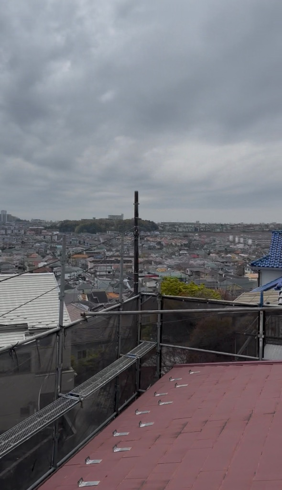

町田市で屋根高圧洗浄💦雨の日は最適だけど、足元注意！
本日は雨でちょっと寒いけど、高圧洗浄には最適な日。みんな気をつけてね💨
今日は町田市のお客様の
屋根高圧洗浄がスタート！
朝から雨が降ってて、
ちょっと寒い😅

※ 屋根の上から見た町並み。こんな景色見ながら作業してます！
☔️ 雨の日が最適な理由
実は、高圧洗浄って
雨の日が一番やりやすいんです💦
理由は3つ：
-
1️⃣
汚れが落ちやすい
雨で屋根が湿ってるから、汚れがふやけて落としやすい！ -
2️⃣
埃が舞わない
晴れの日だと埃が舞って大変。雨だと埃が抑えられる✨ -
3️⃣
洗浄水が自然に流れる
雨と一緒に汚れた水も流れてくれるから効率的！
だから雨の日は、
実はチャンスなんです😊
⚠️ でも注意点も
雨の日の高圧洗浄は良いことばかりじゃない。
やっぱり注意が必要💦

※ 足場と屋根。雨で足元が滑りやすくなってます⚠️
一番怖いのが、足元😰
雨で屋根も足場も滑りやすくなってるから、
一歩間違えると大事故になる。
だから職人さんたちには、
いつも以上に慎重に作業してもらってる。
⚠️ 安全第一！
どんなに作業が順調でも、怪我したら意味がない。
「みんな気をつけてね💨」って、朝礼で必ず伝えてます。
👷 職人さんたち
うちの職人さんたちは、
本当にプロ中のプロ✨
雨の日でも、
しっかり安全確認しながら、
丁寧に作業してくれる。
こういう経験豊富な職人さんがいるから、
お客様に安心してもらえるんだなぁって、
改めて思う😌
いつも本当にありがとう🙏
🧥 ちょっと寒い
4月に入ったのに、
今日は思ったより寒い😅
屋根の上は風も強いから、
体感温度はもっと低い。
職人さんたちには、
防寒着と温かい飲み物を用意😊
こういう細かい気配りが、
現場の士気を保つポイントだと思ってる✨
🏠 お客様のために
今回のお客様は、
築15年で初めての屋根塗装。
最初は「雨の日に大丈夫？」って
心配されてたけど、
理由を説明したら安心してくださった😊
高圧洗浄が終わったら、
次は下地処理して、塗装に入る予定。
完成が楽しみ🎨
きれいな屋根で喜んでもらえるように、
最後まで丁寧に仕上げていきます！
💭 今日のポイント
- ✓ 雨の日は高圧洗浄に最適！汚れが落ちやすい💦
- ✓ でも足元が滑りやすいから、安全第一⚠️
- ✓ 職人さんたちは本当にプロ。いつも感謝🙏
- ✓ 寒いから防寒対策も大事🧥
- ✓ お客様に喜んでもらえる仕上がりを目指す✨